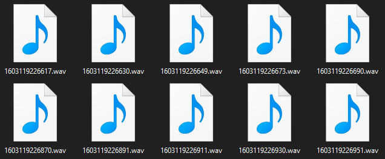

Receiving with VoiceNext
Enable Receiver
Receiving incoming audio is disabled by default to save on bandwidth, as most users will never make use of incoming data. This can be changed by providing a configuration object to @DSharpPlus.VoiceNext.DiscordClientExtensions.UseVoiceNext*.
var discord = new DiscordClient();
discord.UseVoiceNext(new VoiceNextConfiguration()
{
EnableIncoming = true
});
Establish Connection
The voice channel join process is the exact same as when transmitting.
DiscordChannel channel;
VoiceNextConnection connection = await channel.ConnectAsync();
Write Event Handler
We'll be able to receive incoming audio from the @DSharpPlus.VoiceNext.VoiceNextConnection.VoiceReceived event fired by @DSharpPlus.VoiceNext.VoiceNextConnection.
connection.VoiceReceived += ReceiveHandler;
Writing the logic for this event handler will depend on your overall goal.
The event arguments will contain a PCM audio packet for you to make use of. You can convert each packet to another format, concatenate them all together, feed them into an external program, or process the packets any way that'll suit your needs.
When a user is speaking, @DSharpPlus.VoiceNext.VoiceNextConnection.VoiceReceived should fire once every twenty milliseconds and its packet will contain around twenty milliseconds worth of audio; this can vary due to differences in client settings. To help keep track of the torrent of packets for each user, you can use user IDs in combination the synchronization value (SSRC) sent by Discord to determine the source of each packet.
This short-and-simple example will use ffmpeg to convert each packet to a wav file.
private async Task ReceiveHandler(VoiceNextConnection _, VoiceReceiveEventArgs args)
{
var name = DateTimeOffset.Now.ToUnixTimeMilliseconds();
var ffmpeg = Process.Start(new ProcessStartInfo
{
FileName = "ffmpeg",
Arguments = $@"-ac 2 -f s16le -ar 48000 -i pipe:0 -ac 2 -ar 44100 {name}.wav",
RedirectStandardInput = true
});
await ffmpeg.StandardInput.BaseStream.WriteAsync(args.PcmData);
}
That's really all there is to it. Connect to a voice channel, hook an event, process the data as you see fit.

Example Commands
[Command("start")]
public async Task StartCommand(CommandContext ctx, DiscordChannel channel = null)
{
channel ??= ctx.Member.VoiceState?.Channel;
var connection = await channel.ConnectAsync();
Directory.CreateDirectory("Output");
connection.VoiceReceived += VoiceReceiveHandler;
}
[Command("stop")]
public Task StopCommand(CommandContext ctx)
{
var vnext = ctx.Client.GetVoiceNext();
var connection = vnext.GetConnection(ctx.Guild);
connection.VoiceReceived -= VoiceReceiveHandler;
connection.Dispose();
return Task.CompletedTask;
}
private async Task VoiceReceiveHandler(VoiceNextConnection connection, VoiceReceiveEventArgs args)
{
var fileName = DateTimeOffset.Now.ToUnixTimeMilliseconds();
var ffmpeg = Process.Start(new ProcessStartInfo
{
FileName = "ffmpeg",
Arguments = $@"-ac 2 -f s16le -ar 48000 -i pipe:0 -ac 2 -ar 44100 Output/{fileName}.wav",
RedirectStandardInput = true
});
await ffmpeg.StandardInput.BaseStream.WriteAsync(args.PcmData);
ffmpeg.Dispose();
}